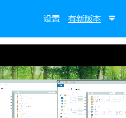
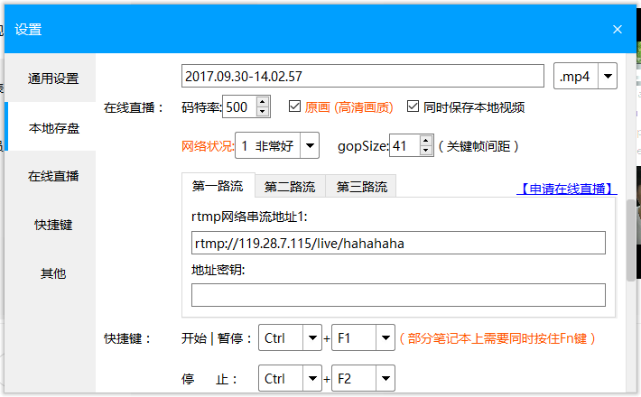
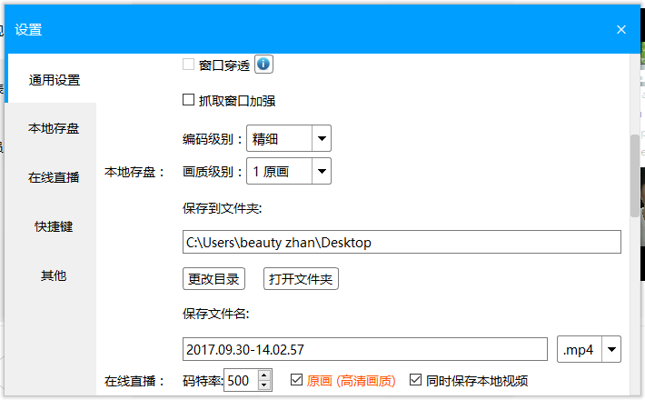
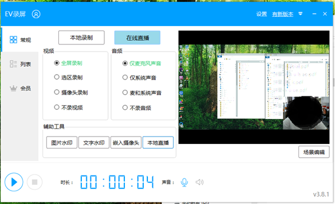
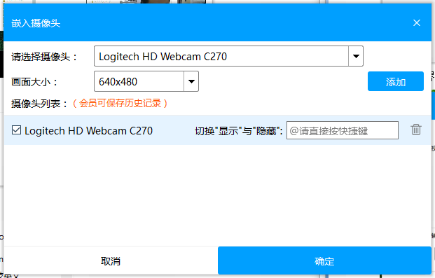
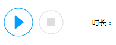
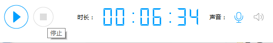
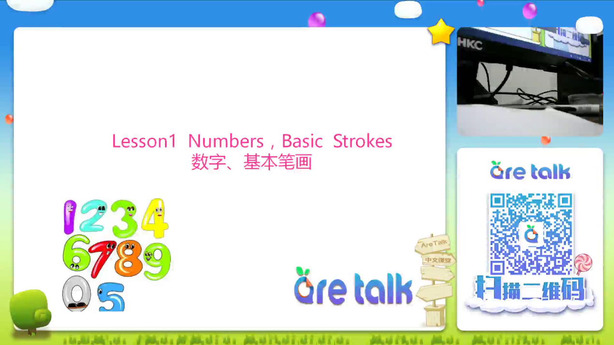

1.登陆教师端
2.打开EV录屏
3.点击右上角的设置按钮

4.在“在线直播”中 勾选 原画/同时保存本地视频。同时填写rtmp网络串流地址1：rtmp://47.91.91.83/live/experience 也可以在“保存到文件夹”中修改本地录制文件存储地址。


5.关闭设置界面

6.点击在线直播
7.点击嵌入摄像头。

8.选择摄像头并在右侧编辑摄像头位置。

9.结束录制时，点击方块，停止录制和直播。

10.在弹出的窗口中可以看到本次直播所录制的视频文件信息，包含大小，时常。
11.使用压缩软件分包压缩并存档。通过邮件发送到aretalk@anttutor.com 。
12.注意：在开始录制后，不会看到自己的摄像头图像。但摄像头已经嵌入进直播页面。
自己看到的样子。
用户看到的样子。
注意：如果是根据开课操作说明视频里那样加了背景图的操作之后（只是后半部分操作略有不同），用户看到的是这样。

另外有要传到youtube频道里的有使用浸入式教学法的公开课录制时可使用下面的背景图
按照下面的示意图左边框放摄像头右边框放ppt内容（也可互换）